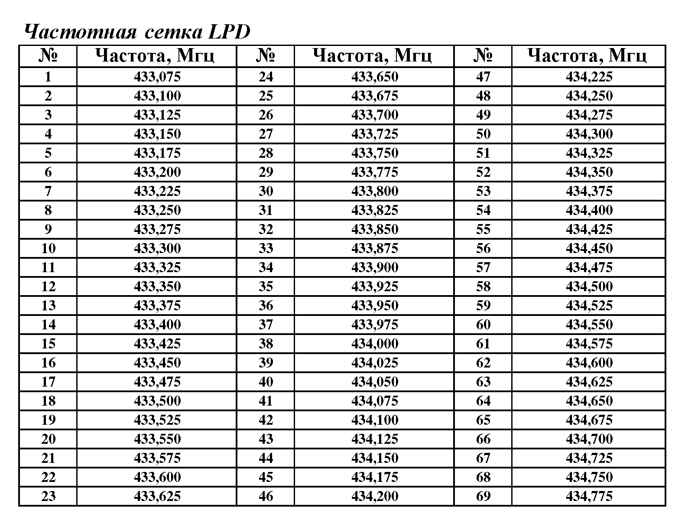
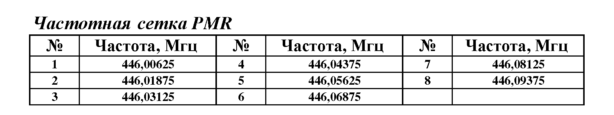
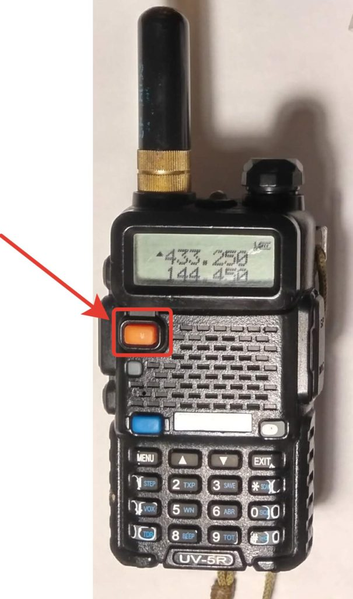
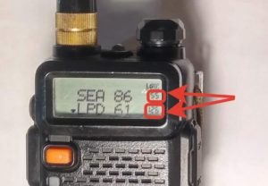
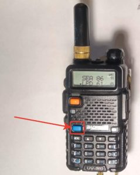
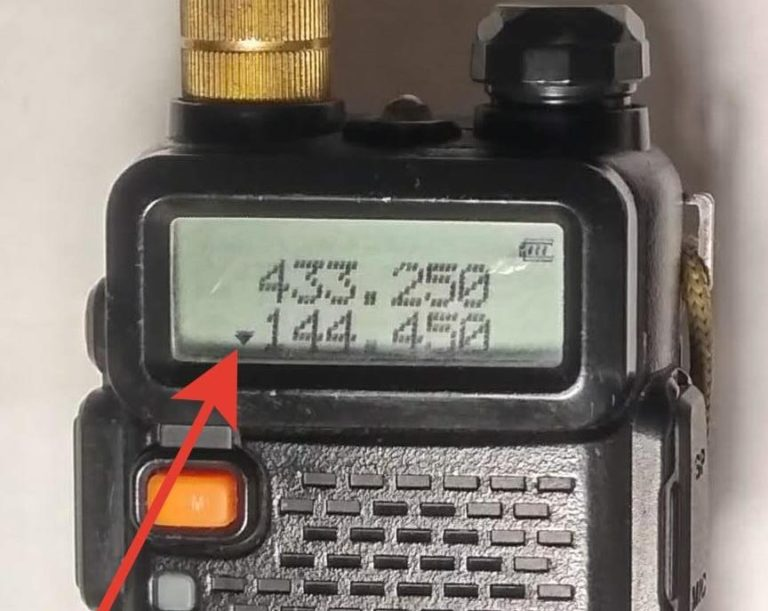

Что такое страйкбол
Страйкбол - это увлекательная, командная, военно-спортивная игра как лазертаг или пейнтбол. Однако в отличии от всех выше перечисленных военно-тактических игр, в страйкболе вместо шариков с краской или лазерного луча вместо пуль используются пластиковые шарики калибром 6 мм. Это делает игру более рискованной, а значит необходимо носить специальную экипировку, которая похожа на реальную военную полевую форму, что позволяет ещё сильнее окунуться в игру. Страйкбол игра на честность, так как в страйкболе не используются какие-либо явно обозначающее попадание элементы (как краска в пейнтболе или датчики в лазертаге), то вся игра ведется на честность играющих. Любой игрок считается пораженным и выбывает из игры на оговоренное сценарием время, если в него или любую часть его экипировки попал шарик. Рикошеты от стен и деревьев, а также попадания в оружие, не засчитываются. Но самый важный аспект это то, что страйкбол игра друзей. Ведь если на игре присутствует взаимоуважение и человеческое, нормальное отношение условных противников к друг другу, то неадекватов и несознанки не будет. Уважайте себя, своих сокомандников и противников, и игра станет гораздо интереснее. Страйкболисты это люди, для которых бывает достаточно иногда выехать на природу с друзьями и просто пострелять от души.
Правила страйкбола.
- Категорически запрещается принимать участие в игре без защитных очков или маски, а также снимать их на площадке.
- Запрещается брать в руки и отбрасывать от себя инициированные петарды и иные пиротехнические изделия.
- Запрещается стрельба по людям случайно оказавшимся на территории игры.
- Используется только стрелковое оружие дульная энергия которого не превышает 3 Джоулей. Оружие должно стрелять шариками промышленного производства калибра 6 мм весом от 0,12 до 0,43 грамм, или 8 мм шариками весом 0,34 грамма. Оборот пневматического оружия указанных характеристик Законом РФ "Об оружии" не регулируется.
- “Убитым” считается игрок в которого попала хотя бы одна пулька, в любую часть тела или амуниции. Исключением являются попадание в оружие и рикошет от предмета. Дружественный огонь засчитывается так же, как и вражеский.
- "Убитый" игрок незамедлительно должен громко огласить свою смерть, поднять руку и обозначить себя красной повязкой, после чего незамедлительно покидает зону боев в отведенное для этого места - мертвяк.
- "Убитый" игрок на игровой территории не имеет права: передавать кому-либо своё игровое оружие, делиться боеприпасами, вступать в разговоры с кем бы то ни было, кроме других "убитых", сообщать другим игрокам любые сведения о противнике и о ходе игры. Запрещено прикрываться убитыми бойцами.
- Запрещается стрельба по всем носящим красную повязку, а также местным жителям, туристам, грибникам, любопытным телам.
- Не стреляйте в голову. Воздержитесь от выстрелов в голову и лицо. Помните, что безопасность во время игры - это самое главное. Не следует портить настроение противнику или товарищу травмоопасными и болезненными выстрелами.
- Запрещается какое-либо выяснение отношений между игроками во время игры.
- Запрещается участие в игре лиц в состоянии алкогольного или наркотического опьянения.
Оружие
На площадке для проведения игры разрешается использовать только специализированное страйкбольное оружие с дульной энергией не более 3J. Под определение попадает стрелковое оружие с электромеханическим приводом, которое стреляет пластиковыми BB шариками Ø 0,6 - 0,8 mm (весом 0,12-0,43g). Также по правилам страйкбола в России существует ряд требований к начальной скорости вылета шара: от 110 до 200 м/с, в зависимости от типа оружия. При игре в помещениях не разрешается использование оружия, скорость которого превышает 120 м/с. Для пиротехники, которая имитирует гранаты и мины и прочие взрывные устройства есть ограничения: мощность не должна превышать общедоступную петарду “Корсар 6”.
Амуниция
В рамках страйкбола камуфляжная форма выполняет те же функции, что и в реальной армии. Основная задача формы в страйкболе — сделать игрока менее заметным на местности (например, в лесу или в траве). Страйкбольные правила четко регламентируют ношение одежды в стиле «милитари» (или камуфлированной формы). Исходя из правил любая страйкбольная команда должна иметь единую форму.
Немного о радиочастотах
Любую радиостанцию можно настроить на нужную частоту в ее рабочем диапазоне. Но не все частоты разрешены для свободного использования. Выход в эфир на запрещенных частотах может повлечь за собой крупный штраф и изъятие радиооборудования по суду. Поэтому каждый, кто покупает рацию, должен знать, какие частоты будут ему доступны сразу, а для каких понадобится лицензия. Кроме того, надо регистрировать радиооборудование, которое будет работать в запрещенных частотных диапазонах.
Законодательство России делит все частоты на три типа: гражданские (наши), служебные и радиолюбительские. Первые доступны обычным гражданам для частной или корпоративной связи, вторые используются исключительно федеральными ведомствами и службами (Минобороны, МЧС, ФСБ, полиция и т. д.), а третьи выделены для связи между любителями.
Закон разрешает использовать без регистрации три диапазона гражданских (наших) частот:
1. CB (Citizen Band). Частота – 27 МГц Классический частотный ресурс для пользования гражданскими лицами без соответствующих разрешений. Находит самое широкое применение, так как отличается достаточно большой дальностью связи. В частности, частота 27.135МГц – это стандартная в России частота дальнобойщиков и автомобилистов, в кабинах которых установлены автомобильные рации. Сетка включает 40 (45) каналов.
Радиостанции Baofeng UV-5R в этом диапазоне не работают, их диапазон 136 МГц - 174 МГц и 400 МГц - 520 МГц.
2. LPD (Low Power Device). 433,075-434,775 МГц, Сетка 69 каналов. Максимальная мощность передачи — 0,01 Вт. Low Power Device — маломощные устройства. В большинстве стран мира этот диапазон разрешён к свободному использованию с некоторыми оговорками, — как правило, с ограничением мощности передатчика и жестко назначенными частотами для приема-передачи. В диапазоне LPD могут и работают многие устройства различного назначения, такие как: радиопульты для открытия дверей гаражей, автомобильные радиосигнализации, а также радиостанции, которым, соответственно, не требуются регистрация и разрешения — т.н. безлицензионные радиостанции.

3. PMR (Private Mobile Radio). 446,000-446,100 МГц, 8 каналов. Мощность передатчика — максимум 0,5 Вт. Европейский стандарт безлицензионной радиосвязи, с ноября 2005 года принятый и в России, в дополнение к стандарту LPD, состоящий из 8 радиочастот с шагом 12,5 кГц, находящихся в диапазоне 446,000 - 446,100 МГц. Максимальная разрешённая мощность радиостанций этого стандарта 0.5 Вт. Допускается использование субтонов аналоговой системы CTCSS или цифровой системы шумоподавления DCS. Дальность действия радиостанции диапазона PMR зависит от особенностей местности и обеспечивает радиосвязь в радиусе до нескольких километров (в условиях прямой видимости); в городских условиях (строения, железобетонные конструкции, электромагнитное поле) радиус действия радиостанции может быть существенно ограничен.

LPD и PRM диапазоны открыты для общего использования. Из-за компактности и удобства использования, помехоустойчивости и небольшой стоимости эти радиостанции приобрели популярность, как у индивидуальных пользователей (лыжников, туристов, охотников и т.п.), так и у профессионалов (охрана, персонал супермаркетов, ресторанов, гостиниц, складов и т.п.).
Ответственность за использование запрещенных в России раций и частот регламентируется статьями 13.3 и 13.4 Кодекса об административных правонарушениях (КОАП). Нарушение условий использования частот, установленных решением о выделении полосы радиочастот и (или) разрешением на использование радиочастот или радиочастотных каналов (статья 13.4, п. 3). То есть, при осуществлении связи на запрещенных каналах раций гражданин может получить предупреждение или штраф от 1000 до 1500 руб., должностное лицо — от 1500 до 3000 руб., юридическое лицо от 15000 до 30000 руб. Суд может также вынести решение о конфискации РЭС (радиоэлектронного средства).
На практике, если Вы будете использовать рации, пусть и с повышенной мощностью, не систематически, и не будете никому создавать помех, то, скорее всего Вами никто не заинтересуется и станцию у Вас не отнимет. В любом случае, при использовании эфира уважайте других его пользователей, особенно если они используют частоты на законных основаниях. Это касается всех гражданских диапазонов.
Настройка радиостанции Baofeng UV-5R
Настройка канала
У Baofeng UV-5R два режима: режим ручного ввода частоты и режим выбора записанных заранее каналов. Переключаются они оранжевой кнопкой.

Режимввода частоты . Если он стоит, то вы увидите на экране ряды страшных цифр (частоту) – как на фото выше. Клавиатурой радиостанции вы можете ввести туда что угодно (но лучше в рамках 433.075-434.775 или 446.006-446.093 – это разрешенные в РФ диапазоны для гражданского общения). Капитан очевидность подсказывает, что если выставить одинаковые цифры на двух радиостанциях, то по ним можно будет общаться.
Режимзаписанных каналов . Если он включен, то справа появятся номера ячеек памяти в которые записаны эти каналы.

Клавиши [▼] и [▲] будут работать для “пролистывания” ячеек памяти, а можно воспользоваться клавиатурой станции, она будет работать как на пульт от телевизора для выбора тех же ячеек памяти.
Работать вы будете со строкой напротив которой расположен треугольничек (на фото вверху это нижняя строка). Переключение строк происходит синей кнопкой A/B.
Выбор рабочей “строки”
Ваша радиостанция может одновременно работать с двумя каналами. На экране вы видите две строки, где можно выбрать частоты/ячейки памяти и быстро между ними переключатся с помощью синей кнопки A/B.

Выбранная строка отмечается треугольничком слева. Именно на той “строке”, что отмечается треугольником, вы будете передавать и принимать информацию.

Baofeng UV-5r позволяет прослушивать одновременно обе “строки” (пункт 7 меню TDR – ON), однако передача всё равно будет вестись только на одной – отмеченной треугольничком.
Блокировка клавиатуры
Завершив все настройки заблокируйте клавиатуру. Делается это также как на старых телефонах – длительным нажатием # (кнопка внизу справа). На экране появится изображения ключика. Снимается блокировка точно также.
Внимание: короткое нажатие на # переключит прибор в режим малой мощности (на экране появится буква L). Не советую его включать.
Сохранение частот в память.
ВНИМАНИЕ. Перед сохранением частот в ячейку памяти (канал), если туда уже что-то записано, лучше его очистить через MENU > DEL-CH (пункт 28) > MENU > выбираем канал стрелочками или с клавы > MENU (для подтверждения), канал удален и не будет отображаться пока вы через MEM-CH (пункт 27) туда что-нибудь не добавите.
Перейдите в режим ввода частоты (где частоту вводим с клавиатуры), оранжевая кнопка VFO/MR и синей кнопкой A/B выберете верхнюю частоту (строчку).
Введите заданную частоту с клавиатуры или стрелками; например 446.006 это первая разрешенная частота любительского диапазона.
Нажмите MENU и стрелочками выберете MEM-CH (пункт 27), повторно нажмите MENU для выбора канала.
Стрелочками или с клавиатуры задайте канал в который хотите сохранить частоту, вновь нажмите MENU для подтверждения.
Частота сохранена в выбранный вами канал. Можно нажать EXIT, а можно подождать пару секунд и станция сама вернется в режим приема-передачи.